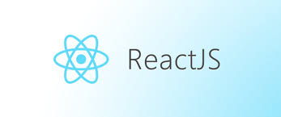

How to Build a React App
April 4, 2025React.js is a JavaScript library developed by Facebook for building user interfaces, especially single-page applications. What sets React.js apart is its component-based architecture, which allows developers to break down complex UIs into smaller, reusable pieces. It uses a virtual DOM to optimize rendering performance, updating only the parts of the page that change, rather than reloading the entire UI. React's declarative approach also makes the code more predictable and easier to debug, making it a popular choice for modern web development.
Understanding the Basics: DOM vs. Virtual DOM
To understand how React.js works we need to know what is DOM (Document Object Model) and Virtual DOM.
The Document Object Model (DOM) is a tree-like structure that represents the elements of a web page, allowing JavaScript to interact with and update the content dynamically. However, manipulating the real DOM can be slow and inefficient, especially in large applications. To solve this, React.js uses a Virtual DOM (VDOM), which is a lightweight copy of the real DOM. When changes occur in a React application, they are first made to the VDOM. React then compares the new VDOM with the previous one to identify exactly what changed—a process called "diffing". After this comparison, React updates only the necessary parts of the real DOM, making the process much faster and more efficient.
Prerequisites for Working with React
What is Node.js?
React apps are built with JavaScript, but to run your project locally, compile code, and manage dependencies, you need an environment that can execute JavaScript outside the browser.
That's where Node.js comes in.
Node.js is a JavaScript runtime that lets you run JavaScript code on your machine (outside of a browser). It's essential for working with React and many modern JavaScript tools.
You can check if Node.js is installed by running:
node -v
node --versionIf you see a version number, you're good to go. If not, download and install Node.js from https://nodejs.org.
What is npm?
npm stands for Node Package Manager. It comes bundled with Node.js and helps you install and manage third-party packages (aka libraries or dependencies) in your project.
React itself is a package you'll install using npm. So are tools like React Router, Axios, Tailwind CSS, etc.
Check if npm is installed by running:
npm -v
npm --versionWhat is npx?
While npm is used to install packages, npx is used to run them directly without installing them globally on your machine.
This is super useful for one-time tasks like creating a new React project with Create React App.
Creating a React Project
Now that you know what each tool does, let's create a React app.
Open your terminal and run:
npx create-react-app my-app--> npx runs the tool
--> create-react-app is the CLI tool to bootstrap a new project
--> my-app is the name of the project folder (you can name it whatever you want)
Navigate and Start the App
Once the setup is complete, go into your new project folder and start the development server:
cd my-app
npm start--> cd my-app: moves you into the project folder
--> npm start: launches the React app in development mode
Your browser should automatically open http://localhost:3000 and show your new React app!
Understanding the Project Structure
After the project is created, here's what the folder structure looks like:
Now let's learn what the files and folders in our project are.
node_modules/
The node_modules/ folder stores all the npm packages your project depends on. This includes React itself, Babel, Webpack, and hundreds of other libraries. You should never manually edit anything here — this folder is automatically generated when you run npm install.
public/
The public/ folder holds static files that are served directly to the browser. The most important file here is index.html, which contains the <div id="root"></div> element — this is where your entire React app will be injected. You can also place favicons, images, or fonts here that don't need to go through the JavaScript build process.
(Webpack is the module bundler behind the scenes that serves this folder's files directly to the browser without processing them.)
src/
The src/ folder contains all your application's source code. This is where your React components, pages, styles, utility functions, and logic live. The App.js file typically represents your main component, and index.js serves as the entry point that connects your app to the HTML file. During development, you'll spend most of your time working in this folder.
package.json
The package.json file is the foundation of your React project. It contains the project's name, version, dependencies, and npm scripts such as npm start or npm run build. When someone else downloads your project, this file tells them which packages need to be installed. It also defines the commands you'll use most often during development.
package-lock.json
The package-lock.json file records the exact versions of every package and sub-dependency that your project uses. This ensures that the app works exactly the same on any machine, preventing compatibility issues. While package.json says "what" to install, package-lock.json says "exactly which version" to install.
Building a Simple Counter App with React
Let's create a simple counter application to demonstrate how React components work together:
App.js File
import React from 'react';
import Counter from './components/Counter'; // path to the Counter component
function App() {
return (
<div style={{ textAlign: 'center', marginTop: '50px' }}>
<p>Hello, I'm React</p>
<Counter />
</div>
);
}
export default App;
components/Counter.js
// src/components/Counter.js
import React, { useState } from 'react'; // Importing React and useState
function Counter() {
const [count, setCount] = useState(0); // Initializing state
const increase = () => setCount(count + 1); // Increment function
const decrease = () => setCount(count - 1); // Decrement function
return (
<div>
<button
onClick={decrease}
style={{ fontSize: '24px', marginRight: '20px' }}
>
−
</button>
<span style={{ fontSize: '28px', fontWeight: 'bold' }}>
{count}
</span>
<button
onClick={increase}
style={{ fontSize: '24px', marginLeft: '20px' }}
>
+
</button>
</div>
);
}
export default Counter;
In your terminal run npm start and you will see the counter app with increment and decrement buttons!
Key Concepts in the Counter Example
Let's break down what's happening in our counter app:
- Components: We've created two components - App and Counter. Components are the building blocks of React applications.
- Hooks: We used the
useStatehook to add state to our function component.const [count, setCount] = useState(0)creates a state variable called "count" initialized to 0, and a function "setCount" to update it. - Event Handling: We attached event handlers to the buttons using
onClick. - Props: While not explicitly shown in this example, the Counter component is used as a child component in App.js, demonstrating component composition.